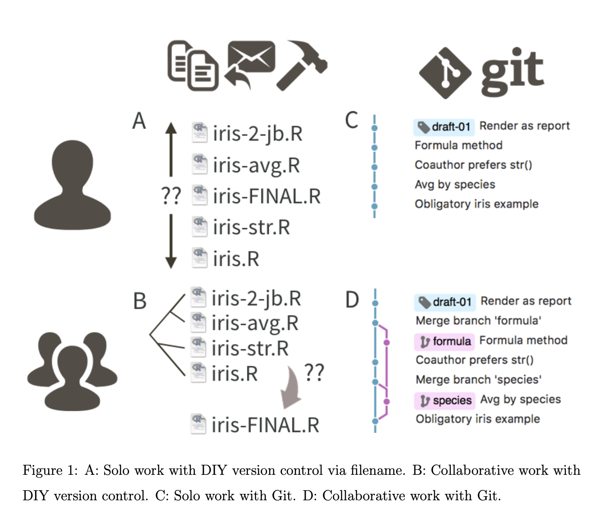
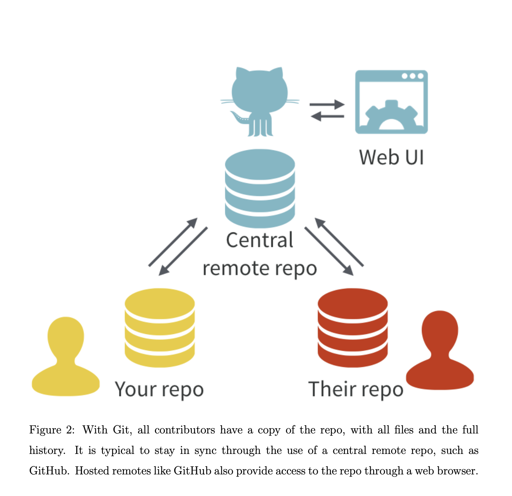

Version Control
What is it ans why is it important?
“Version control, also known as source control, is the practice of tracking and managing changes to software code. Version control systems are software tools that help software teams manage changes to source code over time.” (Atlassian)
” Data analysis, statistical research, and teaching statistics have at least one thing in common: these activities all produce many files! There are data files, source code, figures, tables, prepared reports, and much more. Most of these files evolve over the course of a project and often need to be shared with others, for reading or edits, as a project unfolds. Without explicit and structured management, project organization can easily descend into chaos, taking time away from the primary work and reducing the quality of the final product. This unhappy result can be avoided by repurposing tools and workflows from the software development world, namely, distributed version control.” (Janny Bryan - Excuse me do you have a moment to talk aout version control)
“Anyone who has wrestled with multiple versions of a document or script named by appending the word “final” will know how quickly such naming conventions can escalate into absurdity. Version control provides a structured and transparent means of tracking changes to code and other files. It was designed for use in software development and it is equally applicable to scientific programming. By recording snapshots of a project at successive points in time, you can create a record of your project’s development while keeping your workspace clean. Version control also facilitates collaboration when used within project teams or when contributing to open source software projects” (Britich Ecology Society)

Version control software is designed to help you manage your file revisions. Version control software runs directly on your computer, allowing you to manage files within your local file system. You can also use version control software to interact with external copies of versioned files if you choose. (Britich Ecology Society)
Version control is the lab notebook of the digital world. It is what professionals use to keep track of what they have done and to collaborate with other people. Every large software development project relies on it, and most programmers use it for their small jobs as well.
It is not just for software: books, papers, small data sets, and anything that changes over time or needs to be shared can and should be stored in a version control system.
“Tracking changes in documents with extended file formats such as Word or Excel documents is better done using their built-in revision control, although you can use version control software to store snapshots of these files.”
How does it work?
Git is what one type of a version control system for file management. The main idea is that as you (and your collaborators) work on a project, the software tracks, and records any changes made by anyone.
- Similar to the “track changes” features in Microsoft Word, but more rigorous, powerful, and scaled up to multiple files
- Great for solo or collaborative work
- Version control systems start with a base version of the document and then record changes you make each step of the way.
- For example, two users can make independent sets of changes on the same document.
- Unless multiple users make changes to the same section of the document - a conflict - you can incorporate two sets of changes into the same base document.
- It allows us to decide which changes will be made to the next version (each record of these changes is called a commit), and keeps useful metadata about them.
- The complete history of commits for a particular project and their metadata make up a repository.
- Repositories can be kept in sync across different computers, facilitating collaboration among different people.

A note on GitHub
“We’ve introduced Git’s powerful structure for file management, so where does GitHub fit in? GitHub complements Git by providing a slick user interface and distribution mechanism for Git repositories. Git is the software you will use locally to record changes to a set of files. GitHub is a hosting service that provides a Git-aware home for such projects on the internet. These relationships are shown in Figure 2. GitHub is like DropBox or Google Drive, but more structured, powerful, and programmatic.” (Bryan 2017)
So, What is GitHub?
- online platform and service built around Git
- provides a centralized hosting platform for Git repositories
- allows us to store, manage, and collaborate on their Git repositories in the cloud
- offers additional features on top of Git, such as a web-based interface, issue tracking, project management tools, pull requests, code review, and collaboration features
- enables easy sharing of code with others, facilitating collaboration and contribution to open source projects
- provides a social aspect, allowing users to follow projects, star repositories, and discover new code

Version Control for Open Science and Reproducibility
Keeping track of your work is not only useful for when you are currently working on a project or to keep thinks organized. It is also very powerful tool for documenting your work and making it transparent and reproducible.